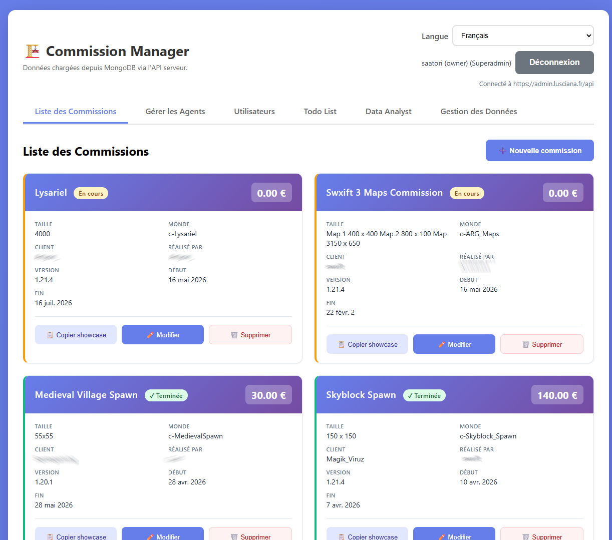
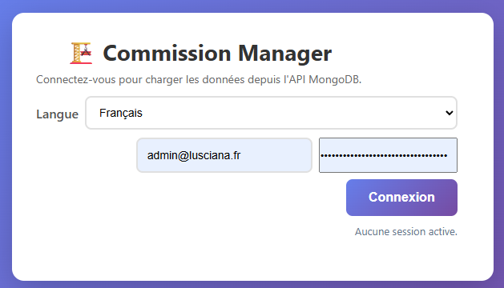
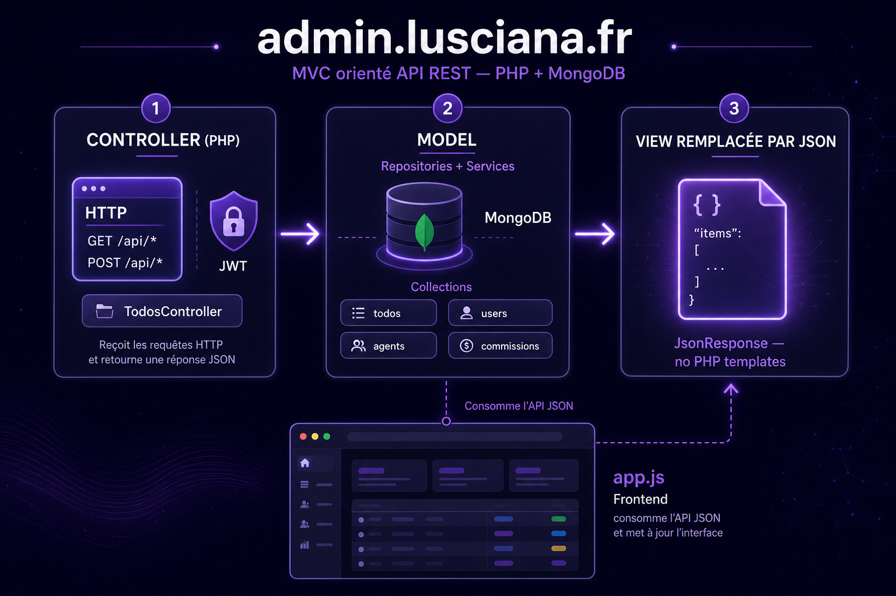
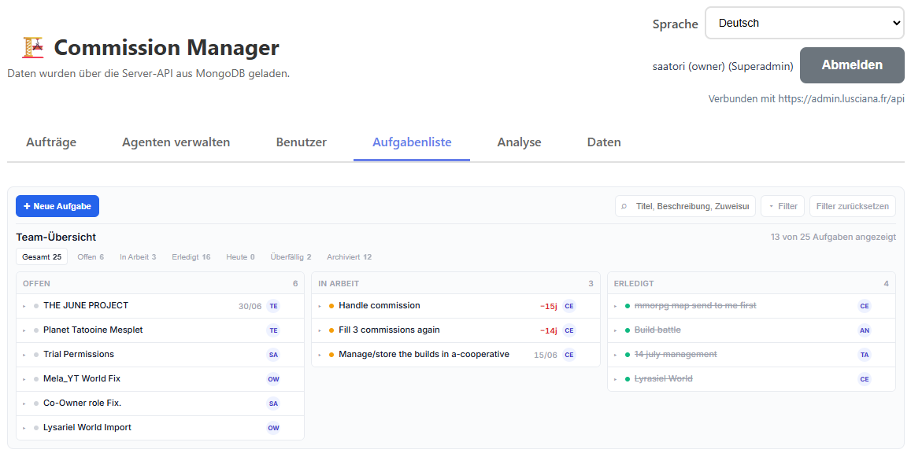
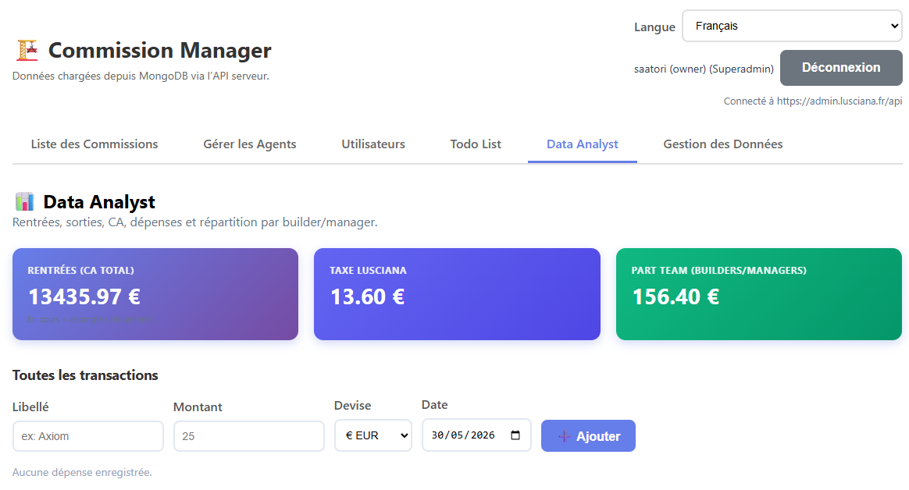

CRM · Back-office · VPS
admin.lusciana.fr
Développement d’un site web professionnel admin.lusciana.fr (HTML vanilla + PHP + DB) : gestion API/base de données, architecture frontend + backend, déploiement VPS Docker chez Hostinger (KVM 4) avec MongoDB.
01 — Application
Équipe, commissions & rôles
admin.lusciana.fr est le CRM interne de Lusciana. Le projet est né d’un besoin concret de gestion et de numérisation de l’entreprise : agents, commissions et todolist au quotidien.
La todolist sert de système de prise en compte des besoins de l’équipe : chacun peut ajouter/supprimer une tâche et l’assigner à un membre.


Accès
Authentification via jeton JWT, avec chargement des données depuis l’API MongoDB.
02 — Backend
MVC orienté API REST

Le backend est une API REST JSON en PHP — pas de templates HTML côté serveur.
Le « V » (View) est remplacé par des réponses JSON ; le frontend
(pages/assets/app.js) gère toute l’UI.
Point d’entrée : requête HTTP → public/index.php →
bootstrap.php → App::run() (config, MongoDB, CORS, routage, JSON).
| Couche | Rôle | Dans le projet |
|---|---|---|
| Controller | Requête HTTP, auth/rôles, validation, appel repo/service, JsonResponse |
backend/src/controllers/ |
| Model | Données métier — documents MongoDB (tableaux associatifs), pas de classes Model dédiées | Collections todos, users, agents, … |
| View | Absente côté PHP → JSON pour le frontend | Http/JsonResponse.php, MongoSerializer |
En pratique : Repositories/ (CRUD MongoDB) et
Services/ (AuthService, import historique, engagement agents).
Routes câblées à la main dans App::registerRoutes().
03 — Structure & flux
Exploration du backend
Arborescence condensée du dépôt, flux d’une requête type et exemple concret de création de tâche.
-
lusciana-admin
-
Frontend (UI)
- pages/index.html
- admin/index.html
-
pages/assets
- app.js
- app.css
- todos-board.css
-
Backend (API PHP)
- public/index.php
-
src
- App.php
- Http/
- controllers/
- services/
- Repositories/
- config/
-
MongoDB 9 collections
- users
- agents
- commissions
- expenses
- todos
- agent_engagement_events
- login_events
- refresh_tokens
- import_runs
-
Frontend (UI)
- GET /api/todos + Bearer JWT
- App::run() → dispatch
- TodosController → authenticate
- TodoRepository → MongoDB
- JsonResponse → frontend
Exemple — création d’une tâche
AuthService::requireRole()— JWT + rôle builder min.Validator— title, status obligatoires.TodoRepository::insert()— écriture MongoDB.MongoSerializer::normalize()— BSON → JSON.JsonResponse— 201{ message, item }.
Pas de classe Todo PHP : le modèle = document MongoDB + règles controller/service.
- Onglets UI Dashboard, Commissions, Agents, Analyst, Users, Todos, Data, Compte.
- Rôles guest → builder → manager → admin → superadmin.
Navigateur (app.js) → /api/* → Controller → Repository/Service → MongoDB → JSON
04 — Données
MCD — modèle conceptuel
Base MongoDB documentaire (nom dans .env) — 9 collections actives.
Pas de clés étrangères SGBD ; références logiques via ObjectId ou pseudo (commissions).
-
Utilisateur
id,name,email(UK),passwordHash,role,isActive,tokenVersion,agentId,assignedAgentIds[] -
Agent
pseudo(UK),category,discord,commissionRate,isCurrentTeamMember, IBAN, adresse,legacyImport -
Commission
buildName,buildSize,worldName,price,selectedAgents[],realizedBy[],priceDistribution,createdBy -
Tâche
title,description,status,archived,deadline,assignedTo,createdBy,updatedBy -
Dépense
label,amount,currency,date,createdBy -
Événement engagement
agentId,type,note,occurredAt,createdByUserId -
Jeton rafraîchissement
tokenId,userId,tokenHash,expiresAt,revokedAt -
Événement connexion
userId,occurredAt,ipAddress,userAgent -
Import run
key(UK), hashes agents/commissions, compteurs,completedAt
| Association | A | Card. | B | Card. |
|---|---|---|---|---|
| Lier | Utilisateur | 0,1 | Agent | 0,1 |
| Accéder | Utilisateur | 0,N | Agent | 0,N |
| Créer | Utilisateur | 1,N | Commission / Dépense / Tâche | 0,N |
| Participer | Agent | 0,N | Commission | 0,N |
| Engagement | Agent | 1,N | Événement engagement | 0,N |
| Session | Utilisateur | 1,N | Refresh token | 0,N |
- Rôle guest → builder → manager → admin → superadmin
- Catégorie agent client · apprentice · builder · manager
- Statut tâche todo · in_progress · done
- Type engagement meeting_absence · survey_no_response · task_missed · other_inactivity
05 — MLD
Implémentation MongoDB
Schéma logique tel qu’il existe dans le code — clés métier, FK logiques et champs dénormalisés.
users
_id ObjectId PK · email UK · role enum · agentId → agents · assignedAgentIds[] · tokenVersion invalidation JWT
agents
pseudo UK · category · paymentMethods[] · commissionRate · legacyImport objet import Excel
commissions
selectedAgents[] / realizedBy[] par pseudo · priceDistribution { pseudo: montant } · createdBy → users · clé import : (legacyImport.source, month, row, column, type)
expenses · todos
expenses : label, amount, currency (EUR), date, createdBy.
todos : title obligatoire, status enum, assignedTo texte libre, createdBy/updatedBy + noms dénormalisés.
agent_engagement_events · login_events
Engagements négatifs (absence, retard…) liés à agentId. Historique connexions par userId.
refresh_tokens · import_runs
JWT refresh (tokenId UK, hash bcrypt). Trace import historique (key ex. lusciana-historical-import, md5 NDJSON).
Équivalent relationnel (migration SQL)
users(_id PK, email UK, role, agentId FK→agents, …)
user_assigned_agents(userId, agentId)
commissions(_id PK, createdBy FK→users, …)
commission_selected_agents(commissionId, agentPseudo)
todos(_id PK, createdBy FK, updatedBy FK, …)
agent_engagement_events(agentId FK, …)
refresh_tokens(tokenId UK, userId FK, …)06 — Patrimoine informatique
Ressources, continuité & exploitation
Recensement et identification des ressources numériques, exploitation des référentiels, normes et standards, mise en place et vérification des niveaux d’habilitation.
Vérification de la continuité du service, gestion des sauvegardes, collecte et orientation des demandes, traitement des incidents et évolutions (assistance, applicatif et système).
Les cartes de commissions réalisées sont sauvegardées automatiquement deux fois par jour, avec une rétention de 7 jours, afin de limiter la perte de données en cas d’incident.

07 — Projet & mise en production
Mode projet, tests & déploiement
J’ai rédigé mon propre cahier des charges à partir des besoins de l’équipe, puis je l’ai appliqué pour développer une application la plus proche possible de l’usage réel.
Le projet est versionné et hébergé sur un VPS KVM 4 chez Hostinger, avec configuration Docker et stack PHP MVC + MongoDB. Je reste à l’écoute des demandes d’évolution : par exemple, la todolist a récemment été modifiée suite à une remontée d’un membre de l’équipe.

08 — Synthèse projet
Ce que le projet admin.lusciana.fr démontre
Développement d’un site web professionnel admin.lusciana.fr (HTML vanilla + PHP + DB) : API/base de données, site en ligne, architecture frontend+backend, VPS Docker + MongoDB, web avancé.
- API / Base de données Gestion de l’API et de la base de données.
- Site pro en ligne Service professionnel accessible en ligne sur admin.lusciana.fr.
- Frontend + Backend Architecture complète entre interface frontend et logique backend.
- Déploiement VPS + MongoDB Déploiement sur VPS (Docker) avec base de données MongoDB.
- Web avancé Utilisation de technologies web avancées.
Ce CRM est utilisé par mon équipe au quotidien pour piloter l’activité. Ce projet m’a permis de monter en compétences sur Docker et de construire une application de gestion robuste, que je fais évoluer en continu.